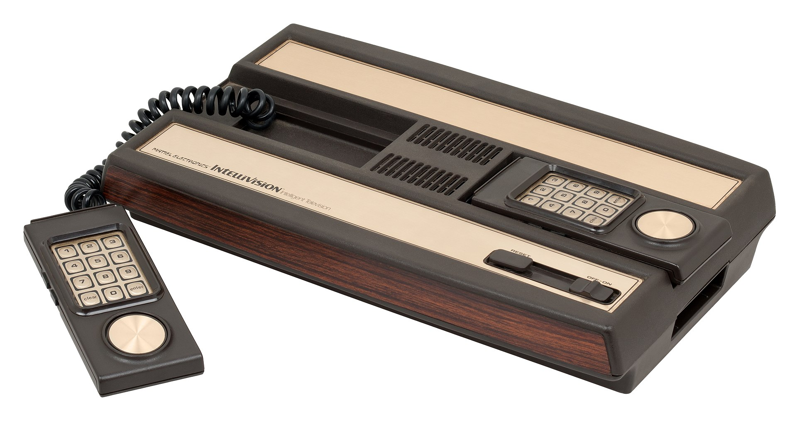
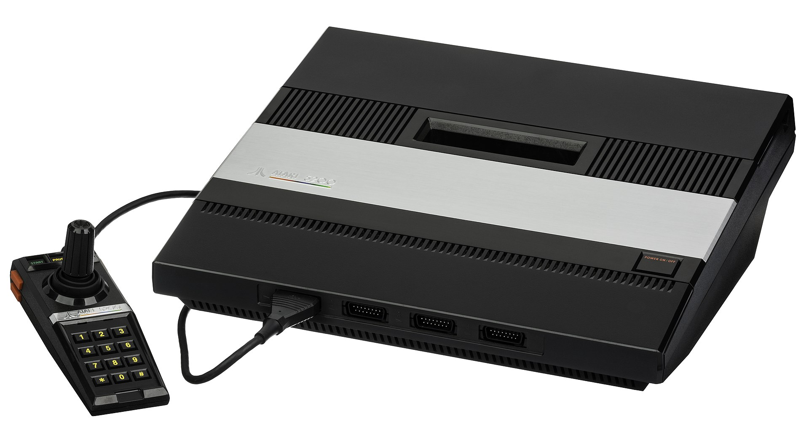

Atari 2600

The Atari 2600, originally branded as the Atari Video Computer System (Atari VCS) until November 1982, is a home video game console developed and produced by Atari, Inc. Released on September 11, 1977, it popularized the use of microprocessor-based hardware and of games stored on swappable ROM cartridges, a format first used with the Fairchild Channel F in 1976. The VCS was bundled with two joystick controllers, a conjoined pair of paddle controllers, and a game cartridge—initially Combat and later Pac-Man.
Atari was successful at creating arcade games, but their cost to develop and limited lifespan drove CEO Nolan Bushnell to seek a programmable home system. The first inexpensive microprocessors from MOS Technologies in late 1975 made this feasible. Development of the console—known as "Stella" during its prototype stage—was performed by Atari subsidiary Cyan Engineering. Atari was recovering from heavy losses in the 1974 fiscal year, and lacking funding to complete the project, Bushnell sold Atari to Warner Communications in 1976. Warner's investment helped to hurry completion of the console following the release of the Channel F.
The Atari VCS launched in 1977 with nine simple, low-resolution games in 2 KiB cartridges. The system's killer app was the home conversion of Taito's arcade game Space Invaders in 1980. The VCS became widely successful, leading to the creation of Activision and other third-party game developers as well as competition from home console manufacturers Mattel and Coleco. By the end of its primary lifecycle in 1983–84, games for the 2600 were using more than four times the ROM of the launch games with significantly more advanced visuals and gameplay than the system was designed for, such as Activision's Pitfall!.
In 1982, the Atari 2600 was the dominant game system. Amidst competition from both new consoles and game developers, a number of poor decisions from Atari management ffected the company and the industry as a whole. The most public was an investment into licensed games for the 2600, including Pac-Man and E.T. the Extra-Terrestrial. Pac-Man became the system's biggest selling game, but the substandard conversion contributed to a loss of consumer confidence in the console. E.T., rushed to market for the holiday shopping season, was critically panned and a commercial failure. Both games, and a glut of low quality third-party releases, are frequently cited as factors in ending Atari's relevance in the console market. Atari's downfall reverberated through the industry resulting in the video game crash of 1983.
Warner sold Atari's home division to Commodore CEO Jack Tramiel in 1984. In 1986, the new Atari Corporation under Tramiel released a lower-cost version of the 2600 and the backward-compatible Atari 7800, but it was Nintendo that led the recovery of the industry with its 1985 launch of the Nintendo Entertainment System. Production of the Atari 2600 ended on January 1, 1992, with an estimated 30 million units sold across its lifetime.
Intellivision
The Intellivision is a home video game console released by Mattel Electronics in 1979. The name Intellivision is a portmanteau of "intelligent television". Development of the console began in 1977, the same year as the introduction of its main competitor, the Atari 2600. In 1984, Mattel sold their video game assets to a former Mattel Electronics executive and investors who formed an entity that became INTV Corporation. Games development started in 1978 and continued until 1990 when the Intellivision was discontinued. From 1980 to 1983 over 3 million Intellivision units were sold.
In 2009, video game website IGN named the Intellivision the No. 14 greatest video game console of all time. It remained Mattel's only video game console until the release of the HyperScan in 2006.
ColecoVision

ColecoVision is a second-generation home video-game console developed by Coleco and launched in North America in August 1982. It was released a year later in Europe by CBS Electronics as the CBS ColecoVision.
The console offered a closer experience to more powerful arcade video games compared to competitors such as the Atari 2600 and Atari 5200. The initial catalog of twelve games on ROM cartridge included the first home version of Nintendo's Donkey Kong as the pack-in game, Sega's Zaxxon, and some ports of lesser known arcade games that found a larger audience on the console, such as Lady Bug, Cosmic Avenger, and Venture. Approximately 136 games were published between 1982 and 1984.
Coleco released a series of hardware add-ons and special controllers to expand the capabilities of the console. "Expansion Module #1" allows the system to play Atari 2600 cartridges. A later module converts ColecoVision into the Coleco Adam home computer.
ColecoVision was discontinued in 1985 when Coleco withdrew from the video game market.
Atari 5200
The Atari 5200 SuperSystem or simply Atari 5200 is a home video game console introduced in 1982 by Atari, Inc. as a higher-end complement for the popular Atari Video Computer System. The VCS was renamed to the Atari 2600 at the time of the 5200's launch. Created to compete with Intellivision, the 5200 wound up a direct competitor of ColecoVision shortly after its release. While the Coleco system shipped with the first home version of Nintendo's Donkey Kong, the 5200 included the 1978 arcade game Super Breakout which had already appeared on the Atari 8-bit family and Atari VCS in 1979 and 1981 respectively.
The CPU and the graphics and sound hardware are almost identical to that of the Atari 8-bit computers, although software is not directly compatible between the two systems. The 5200's controllers have an analog joystick and a numeric keypad along with start, pause, and reset buttons. The 360-degree non-centering joystick was touted as offering more control than the eight-way Atari CX40 joystick of the 2600, but was a focal point for criticism.
On May 21, 1984, during a press conference at which the Atari 7800 was introduced, company executives revealed that the 5200 had been discontinued after just two years on the market. Total sales of the 5200 were reportedly in excess of 1 million units, far short of its predecessor's sales of over 30 million.